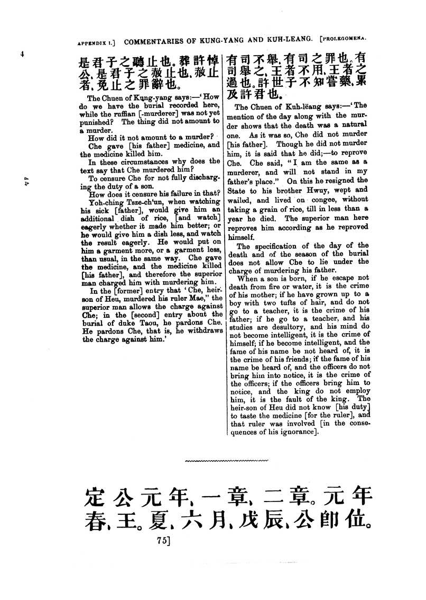

<div3 type="appendix" n="I">
<pb n="54"/>
<head>APPENDIX I. <lb/>
SPECIMENS OF THE COMMENTARIES OF KUNG-YANG AND <lb/>
KUH-LËANG.</head>
<div4 type="section">
<gap desc="Chinese characters" reason="editorial"/>
<head><hi rend="italic">The first year of duke Yin, par</hi>. 1.</head>
<p>It was the [duke's] first year, the spring, the king's first month.</p>
<cols n="2"/>
<cb n="1"/>
<gap desc="Chinese characters" reason="editorial"/>
<cb n="2"/>
<gap desc="Chinese characters" reason="editorial"/>

<pb n="75"/>
<cb n="1"/>
<gap desc="Chinese characters" reason="editorial"/>
<p>The Chuen of Kung-yang says:—'How <lb/>
do we have the burial recorded here, <lb/>
while the ruffian [-murderer] was not yet <lb/>
punished? The thing did not amount to <lb/>
a murder.</p>
<p>How did it not amount to a murder?</p>
<!-- column 1 continues... -->
He pardons Che, that is, he withdraws <lb/>
the charge against him.'</p>
<cb n="2"/>
<gap desc="Chinese characters" reason="editorial"/>
<p>The Chuen of Kuh-lëang says:—'The <lb/>
mention of the day along with the mur- <lb/>
der shows that the death was a natural <lb/>
one. As it was so, Che did not murder <lb/>
<!-- column 2 continues... -->
heir-son of Heu did not know [his duty] <lb/>
to taste the medicine [for the ruler], and <lb/>
that ruler was involved [in the conse- <lb/>
quences of his ignorance].</p>
<cols n="1"/>
<ornament type="line"/>
</div4>
<div4 type="section">
<gap desc="Chinese characters" reason="editorial"/>